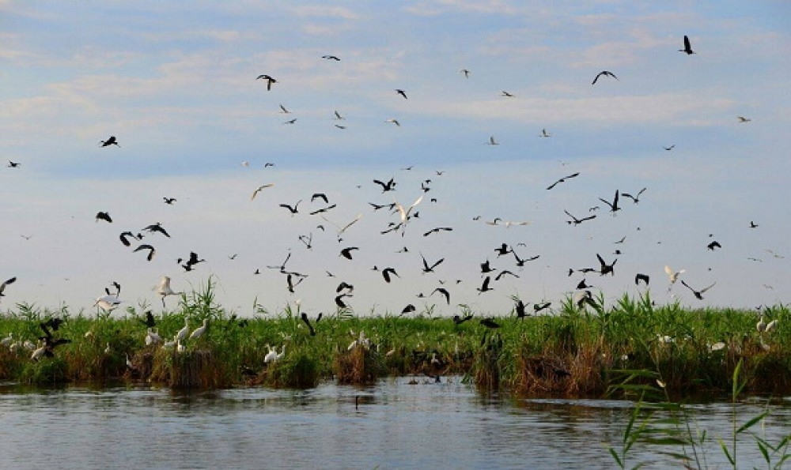
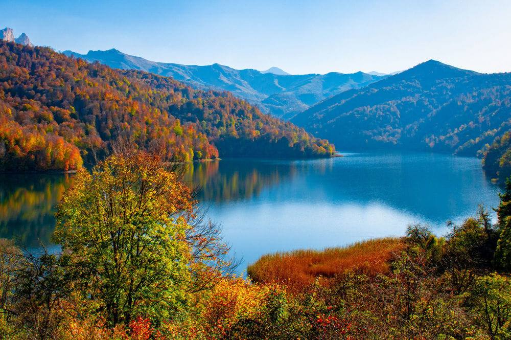

Təbiəti Qoruyaq, Birlikdə Kəşf Edək!
Dayanıqlı səyahətlərinizi PeakVentures ilə planlayın.
💚 Ekoloji Turizm Nədir?
Ekoloji turizm, təbiətin və yerli əhalinin rifahını qorumağa yönəlmiş məsuliyyətli səyahətdir. Bizim ekoloji turlarımız ətraf mühitə minimal təsir göstərərək, təbii ərazilərin fərqli cəhətlərini kəşf etməyə imkan verir.
Hədəfimiz: Təbiəti sevmək, onu qorumaq və bu dəyəri gələcək nəsillərə çatdırmaqdır.
Əsas Eko-Turizm Marşrutlarımız

Qızılağac Milli Parkı (Quş Səyahəti)
Azərbaycanın cənubunda, köçəri quşların əsas dayanacağı. Təbiət fotoqrafiyası və quş müşahidəsi üçün ideal məkandır.
Ətraflı Bax
Şahdağ Eko-Yolları (Böyük Qafqaz)
Təmiz dağ havası, yerli kəndlərə səfər və dayanıqlı trekking təcrübəsi. Ənənəvi həyat tərzini kəşf edin.
Ətraflı Bax

Göygöl və Maralgöl Turları (Su Hövzələri)
Avtomobilsiz zonada gəzinti və təmiz göl ekosisteminin qorunmasına dəstək. Eko-etikaya riayət edin.
Ətraflı Bax